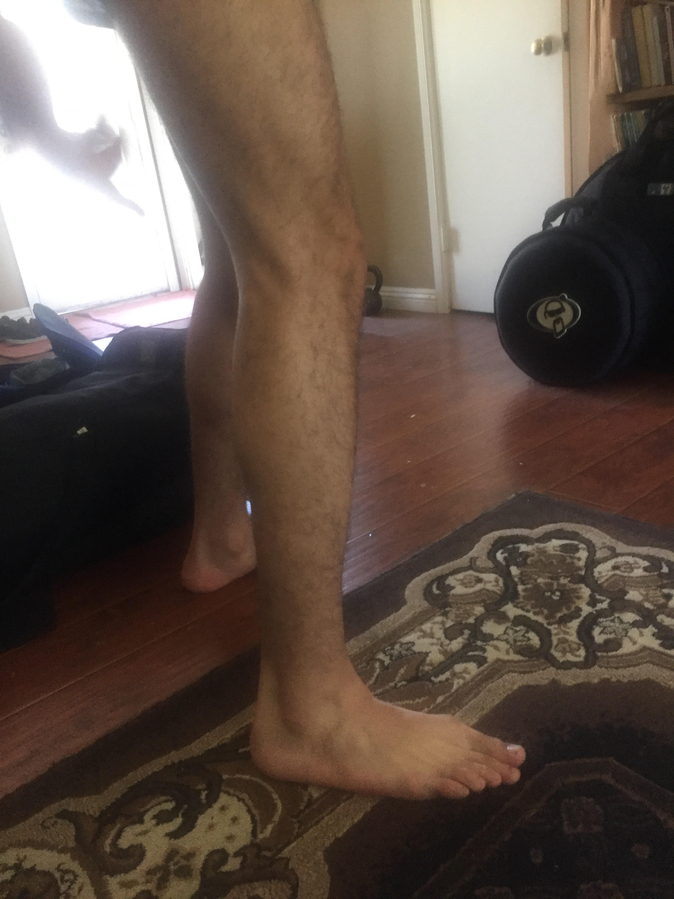
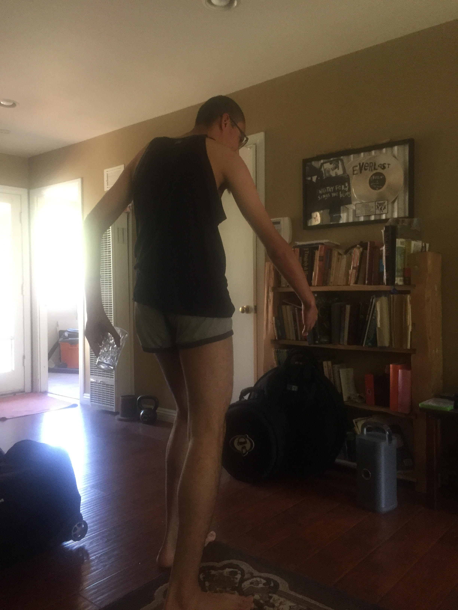
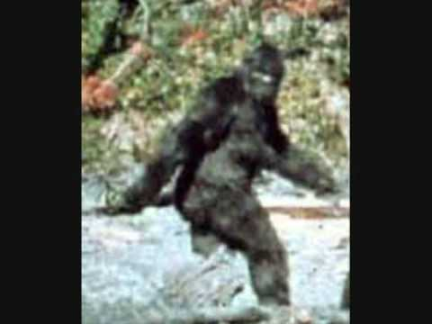

Sleeper Cell

Reason #1 -> Feet

My brother is a size 15 mens shoe. He was born in 2000. A teenage boy with a size 15 shoe?
Insane! But you know who have naturally large and extended feet? Sasquatches! Hence the name Bigfoot!
Insane! But you know who have naturally large and extended feet? Sasquatches! Hence the name Bigfoot!
Reason #2 -> Build

Look at that build! Long arms, long legs, skinny.
You know who else has long arms, legs, and would be skinny were it not for layer after layer of hair? A sasquatch!
You know who else has long arms, legs, and would be skinny were it not for layer after layer of hair? A sasquatch!
Reason #4 -> Posture
Look at the image above. Now, look at the image below. You trying to tell me they aren't insanely similar? It's in his genes!
The swinging arms (no doubt for building velocity), the slightly hunched frame, the ducked head? Sasquatch maneuver 101!

The swinging arms (no doubt for building velocity), the slightly hunched frame, the ducked head? Sasquatch maneuver 101!